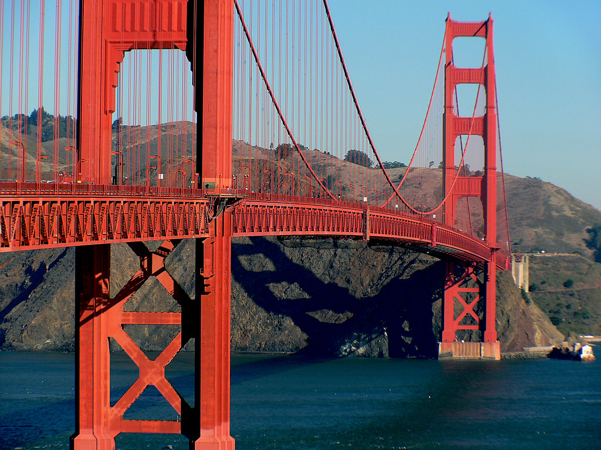
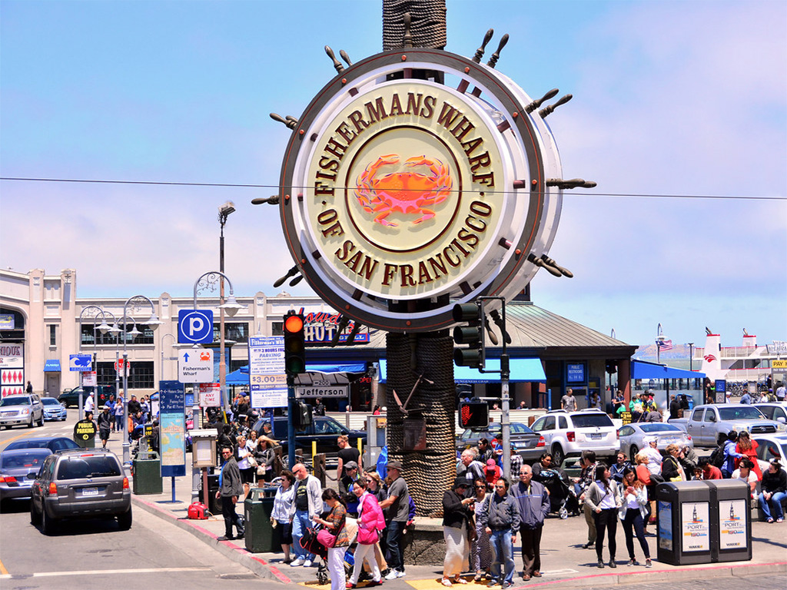
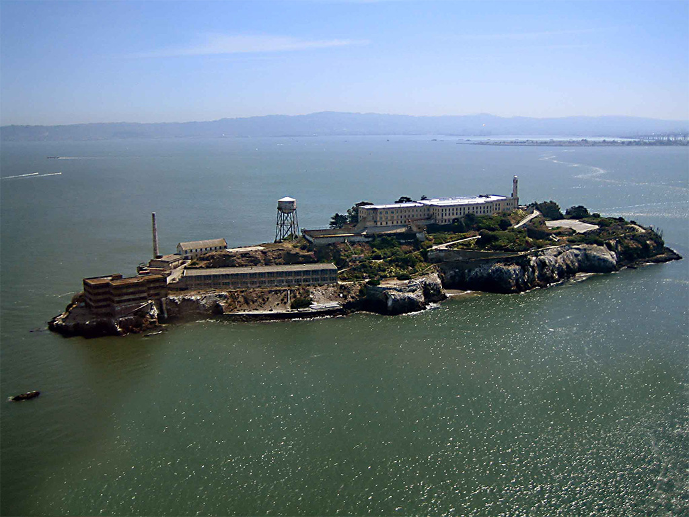

Must-See Attractions
Golden Gate Bridge
San Francisco's most famous attraction, the Golden Gate Bridge is a 1.7 mile-long bridge connecting the Presidio to the Marin headlands. Its towers are 746 feet high and its two cables are over 7,000 feet long! It opened in 1937 after four years of difficult construction. Not only a scenic drive, the bridge provides great views and exercise to hikers and cyclists. There are also vista points north and south of the bridge, providing even more views.
Fisherman's Wharf
Home to many activities and tours, Fisherman's Wharf is a popular neighborhood. Originally an Italian immigrant fishing site in the mid-1800s, the city was redeveloped in the 1970s and 80s to become a tourist attraction (although there are still many active fishermen). It is now home to numerous museums, shops, restaurants, and even a sea lion viewing dock! No matter your interests, you're bound to find something you enjoy at Fisherman's Wharf.
Painted Ladies

A beautiful sight to see, the Painted Ladies are a group of side-by-side Victorian houses, all painted with soft but colorful tones. The nickname Painted Ladies refers to the style of the houses, also found in a few other locations. They are famous not only for their beauty, but for their use in iconic TV shows and movies, such as "Full House". Nearby is a big open park, perfect for enjoying nature as the sun sets over the Painted Ladies.
Alcatraz Island
Once a former prison, Alcatraz is now a national park and popular attraction. Originally just a lighthouse location, Alcatraz became a federal penitenitary in 1934 and remained so for nearly 30 years, until it ceased operation in 1963. Afterwards, the property was opened to the public in 1973, now accessible through ferry rides. With both day and evening tours, people can explore the prison however they please.
| San Francisco Statistics | |
|---|---|
| Population (2022) | 842,754 |
| Land Area | 46.87 square miles |
| Average High Temperature (Summer) | 67°F |
| Average Low Temperature (Winter) | 47°F |
| Average Precipitation | 25 inches per year |
| Tourist Count (2021) | 14.8 Million |
Top 10 Restaurants in San Francisco
- Chez Maman: French & European Food
- Eight AM: American Breakfast Cafe
- Anchor Oyster Bar & Seafood Market: American Seafood
- Seven Hills: Italian Seafood
- Piccolo Forno: Italian Pizza
- Mersea Restaurant & Bar: American Bar
- Mo's Grill: American Diner
- Surisan: Korean Food
- Lapisara Eatery: American/Thai Food
- Boulevard: Gourmet International Food